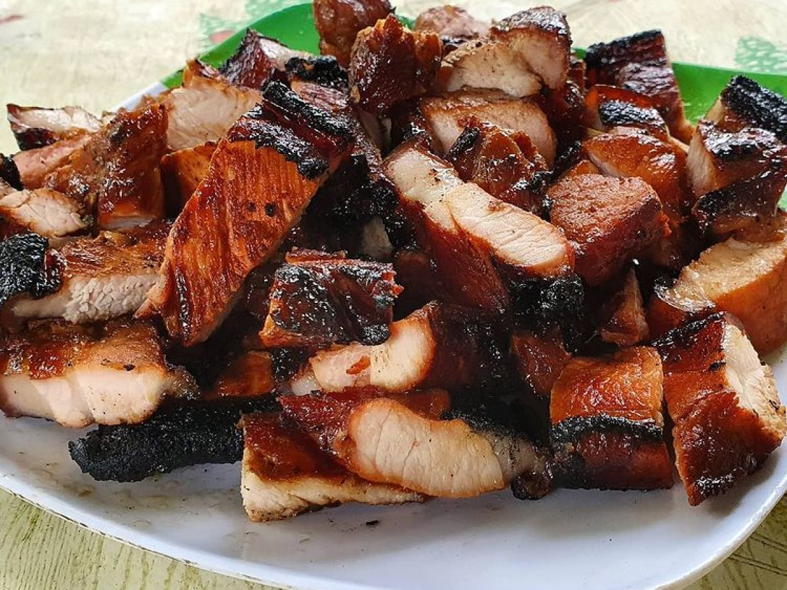

Liempo
Inihaw na Liempo Recipe

Ingredients
- 1 kg (2 lb) liempo (pork belly)
- Cloves of 1 head of garlic, crushed
- 125 ml (1/2 cup) 7-up or Sprite
- 125 ml (1/2 cup) vinegar
- 2 tablespoons sugar
- Freshly ground black pepper
Vinegar-Soy Dip
- 1 medium onion, finely diced
- 250 ml (1 cup vinegar)
- 125 ml ( 1/2 cup) soy sauce
- Freshly ground pepper
- 1 sliced finger chili, (optional)
Instructions
- 2cm (3/4 in) wide slice of liempo (pork belly) lengthwise
- In a mixing bowl, combine the garlic, Sprite/7-up, vinegar, sugar, and pepper. Pour on the liempo (pork belly). Refrigerate for 3 to 4 hours after covering and marinating.
- Drain the meat and discard the marinade when ready to cook. Preheat the grill to medium-high heat and cook the pork for 15 to 20 minutes on one side and 10 minutes on the other. Make sure the pork doesn't burn.
- In a bowl, combine onion, vinegar, soy sauce, and pepper to make the Vinegar-Soy Dip. To combine, stir everything together thoroughly. If you want a spicier dip, add the sliced chili in a quantity that suits your taste.
- Serve the grilled liempo (pork belly) with the dip and cooked white rice.